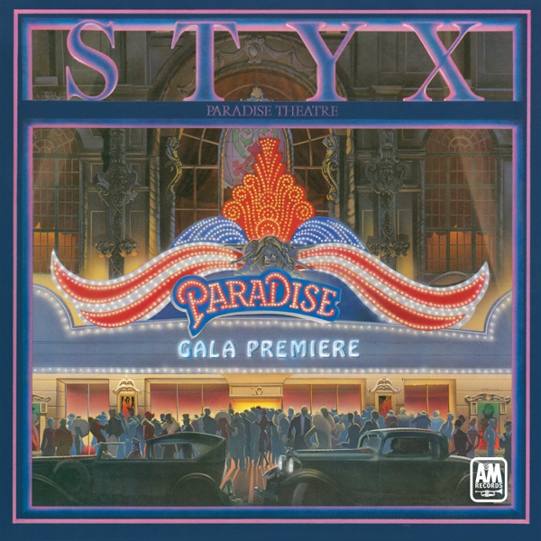

Paradise Theatre
Styx
Upgrade idea: This original Sterling Sound pressing is an excellent copy. No audiophile reissue has been produced. The original A&M pressing is the recommended version — keep it.
- Original release
- 1981
- Pressing year
- 1981
- Country
- US
- Format
- Vinyl LP, Album, Etched, Stereo
- Label / Cat#
- A&M Records – SP-3719
- Genres
- Rock
- Styles
- Prog Rock, Art Rock, Arena Rock
- Discogs release
- 20829940
- Discogs master
- 115927
- Apple Music
- Paradise Theatre
- Wikipedia
- Paradise Theatre
Production notes
Tracklist (Discogs)
| A1 | A.D. 1928 | 1:07 |
| A2 | Rockin' The Paradise | 3:54 |
| A3 | Too Much Time On My Hands | 4:31 |
| A4 | Nothing Ever Goes As Planned | 4:46 |
| A5 | The Best Of Times | 4:17 |
| B1 | Lonely People | 4:38 |
| B2 | She Cares | 4:18 |
| B3 | Snowblind | 4:58 |
| B4 | Half-Penny, Two-Penny | 4:34 |
| B5 | A.D. 1958 | 2:31 |
| B6 | State Street Sadie | 0:27 |
Tracklist (Apple Music)
| 1 | A.D. 1928 | 1:07 |
| 2 | Rockin' The Paradise | 3:35 |
| 3 | Too Much Time On My Hands | 4:31 |
| 4 | Nothing Ever Goes As Planned | 4:46 |
| 5 | The Best Of Times | 4:17 |
| 6 | Lonely People | 5:21 |
| 7 | She Cares | 4:18 |
| 8 | Snowblind | 4:57 |
| 9 | Half Penny Two Penny | 5:58 |
| 10 | A.D. 1958 | 1:07 |
| 11 | State Street Sadie | 0:26 |
Personnel & credits
- Ed Tossing — Arranged By [Horns]
- Chuck Beeson — Art Direction, Design
- Jeffrey Kent Ayeroff — Art Direction, Design
- Chuck Panozzo — Bass Guitar, Pedalboard [Bass]
- Dennis DeYoung — Design Concept [Original Paradise Theater Concept]
- John Panozzo — Drums, Percussion
- Gary Loizzo — Engineer
- Rob Kingsland — Engineer
- Will Rascati — Engineer [Assistant]
- James Young (3) — Guitar, Vocals
- Tommy Shaw — Guitar, Vocals
- Bill Simpson (3) — Horns
- Danny Barber (2) — Horns
- John Haynor — Horns
- Mark Ohlsen — Horns
- Mike Halpin — Horns
- Chris Hopkins (2) — Illustration
- Willardson & White, Inc. — Illustration
- Dennis DeYoung — Keyboards, Vocals
- Ted Jensen — Lacquer Cut By
- Ted Jensen — Mastered By
- Marc Hauser — Photography By [Dennis Deyoung & James Young]
- John Welzenbach — Photography By [John Panozzo & Chuck Panozzo]
- Greg Murry (2) — Photography By [Tommy Shaw]
- Styx — Producer, Arranged By
- Steve Eisen — Saxophone, Soloist
- Dennis DeYoung — Written-By
- James Young (3) — Written-By
- Tommy Shaw — Written-By
Identifiers
- Pressing Plant ID: T (Runouts)
- Rights Society: ASCAP
- Matrix / Runout: SP-03719-A (A Side Label)
- Matrix / Runout: SP-03719-B (B Side Label)
- Matrix / Runout: T1 SP 03719 A T2 P8 STERLING (A Side Etch exc Sterling stamp )
- Matrix / Runout: SP 03719 B EUR 2 EDP PM1 SF1 SM1 ^ STERLING TJ (B Side Etch exc EDP, Sterling stamp)
Notes
℗ © 1980 A&M Records, Inc.
B Side - play area laser-etched, "STYX" logo
Gatefold cover is printed in reverse, with front to the left of spine and rear to right.
Recorded and Mixed at Pumpkin Studios, Oak Lawn, Illinois.
All selections Published by Stygian Songs except B6 by First Time Music
Styx’s 1981 commercial peak — first album certified platinum before release, hit #1, produced ‘The Best of Times’ and ‘Too Much Time on My Hands.’ Original A&M pressing (SP-03719), mastered at Sterling Sound. Matrix SP 03719 A T2 STERLING. A clean original of one of the great arena rock albums.